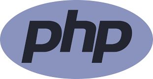
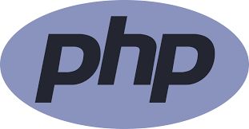

1. 자기소개
다양한 분야의 사회생활과 봉사활동을 통해 업무에
필요한 서류 처리 능력과 대인 관계 능력을 키워왔습니다. 1년
5개월의 사무 업무 처리 경험이 있습니다. 다양한 직무를 수행하며
회사 내부 프로그램과 엑셀, 한글 활용 능력을 키울 수
있었습니다.
그중 회의 보고서, 거래 명세표 등 업무에 필요한
서류 양식을 자체 제작하여 불필요한 기입을 줄였습니다. 또한
생산 관리를 위해 필요한 엑셀 파일을 직접 제작하여 생산 팀과
연결시켜 ERP 프로그램을 사용하지 않아도 중복 업무를 제거하여
회사에 기여하였습니다.
더불어 다양한 업무를 병행한 경험을 살려 업무의
우선 순위를 적절하게 판단하여 업무 효율을 높일 수 있습니다.
특히 개인이 보는 서류가 아닌 동료 직원과 상급자의 시선에서
필요한 내용을 중심으로 서류를 작성하는 법을 익혀왔습니다.
또한 돈을 관리하는 세무 업무를 이행하며 신뢰성
있는 정확한 업무 처리의 자질을 증명한 바 있습니다. 이 경험을
살려 조직의 목표 달성을 위해 기여하고 싶습니다.
2. 살면서 가장 노력한 것 또는 성공한 것
학원에서 진행한 팀 프로젝트에서 팀장을 맡아
‘Mentors’ 프로젝트를 진행했습니다.
프로젝트의 데이터 모델링을 위해 DB 설계를
수행하였습니다. 오라클을 사용하여 ER 다이어그램을 작성하고,
테이블 간의 관계를 정의하였습니다. 교사 정보, 연수 정보, 결제
정보 등의 테이블을 설계하고, 각 테이블의 속성과 제약 조건을
정확히 정의하여 데이터베이스의 일관성과 무결성을
유지하였습니다.
프로젝트 진행 중에는 팀원들의 기술적 역량을
강화하기 위해 지속적인 멘토링을 진행하였습니다. 특히 Spring
프레임워크의 사용법과 MVC 패턴에 대한 이해를 높이기 위해
팀원끼리 멘토-멘티를 지정하여 학습 세션을 운영하고 실전
프로젝트에서의 적용 방법을 지도하였습니다.
팀 프로젝트를 진행하면서 의사소통의 어려움에
직면했습니다. 팀원 간의 의견 충돌로 인해 프로젝트 진행이
지연되고 업무 효율이 저하되었습니다. 하지만 이러한 어려움을
극복하기 위해 우선적으로 대화와 소통을 강조했습니다. 팀원들의
의견을 경청하고, 문제가 발생할 때마다 적극적으로 토의하고
해결책을 모색했습니다. 또한, 각자의 의견을 오해 없이 전달할 수
있도록 중재했습니다.
이러한 노력 덕분에 팀원들 간의 신뢰와 협력이
강화되었고, 의사소통의 어려움을 극복하여 프로젝트를 성공적으로
완료할 수 있었습니다. 이 경험을 통해 팀워크와 문제 해결 능력을
키울 수 있었으며, 더 나은 팀 프로젝트 진행을 위해 의사소통의
중요성을 깨달을 수 있었습니다.
3. 나의 성격
[멘토의 자질]
저는 남을 가르치고 도와주는 것을 즐기며, 남을
가르치고 도와주는 과정에서 발생하는 성과를 함께 나누고, 주변
사람들의 피드백을 수렴하여 자기 성장에 반영하는 것을 중요하게
생각합니다. 이를 통해 더 나은 방향으로 발전할 수 있으며, 다른
사람들과의 상호 작용을 통해 새로운 아이디어와 관점을 얻을 수
있습니다.
[스트레스]
저는 일정 관리와 우선 순위 설정을 통해 스트레스를
최소화하고 있습니다. 업무의 목표를 설정하고 계획을 세워 시간을
효율적으로 활용하며, 작은 목표를 달성하는 것을 통해 성취감을
느끼고 있습니다. 스트레스는 불가피하게 발생할 수 있는
것이지만, 스스로 관리하고 극복할 수 있는 문제라고 생각합니다.
저는 이러한 스트레스 관리 전략을 통해 자신감을 가지고 업무에
임하며, 어려운 상황에도 긍정적으로 대처할 수 있는 능력을
기르고 있습니다.
4. 지원동기 및 입사 후 포부
고등학교 시절, 저는 코딩 자율 동아리를 창설하고
운영하면서 다양한 프로그래밍 언어와 개발 도구에 대해 배우고
실습할 수 있는 기회를 얻었습니다. 동아리 회원들과 함께
프로젝트를 기획하고 개발하며 문제 해결과 협업 능력을 키울 수
있었습니다. 이 경험을 통해 IT 분야에 대한 흥미와 열정이 점점
커져 갔습니다.
대학 진학 후 Java 언어를 접한 이후로 그 매력에
빠져들었습니다. 객체 지향적인 특성과 다양한 라이브러리,
프레임워크를 활용하여 다양한 웹, 모바일 등의 개발을 할 수
있다는 점이 매우 매력적으로 다가왔습니다.
Java로 웹 애플리케이션을 개발하면서 새로운 기술을
배우고 창의적인 문제 해결에 도전하는 즐거움을 느끼고 있으며,
MVC 패턴을 통해 구조화된 코드를 작성함으로써 효율적으로
프로젝트를 진행할 수 있음을 경험하고 있습니다.
저의 포부는 현재의 기술 능력을 지속적으로 발전시켜
더욱 전문적이고 창의적인 웹 솔루션을 제공하는 것입니다. 새로운
기술과 도구에 대한 지속적인 학습을 통해 최신 웹 개발 트렌드를
파악하고, 이를 실무에 적용하여 고객들에게 더 나은 서비스를
제공할 수 있는 개발자로 성장하는 것이 제 목표입니다.
또한, 팀원들과의 협업을 통해 함께 일하며 서로를 더
발전시키고 팀의 성과를 극대화하는 데에 기여하는 것 또한
중요하게 생각합니다. 최종적으로 사회적 가치를 창출하는 웹
개발자가 되는 것이 제 꿈입니다.


 
